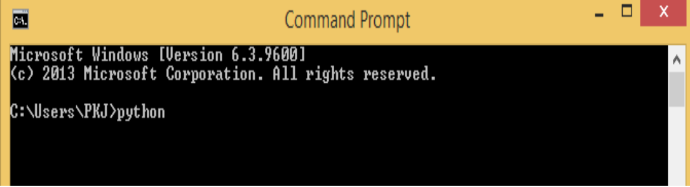
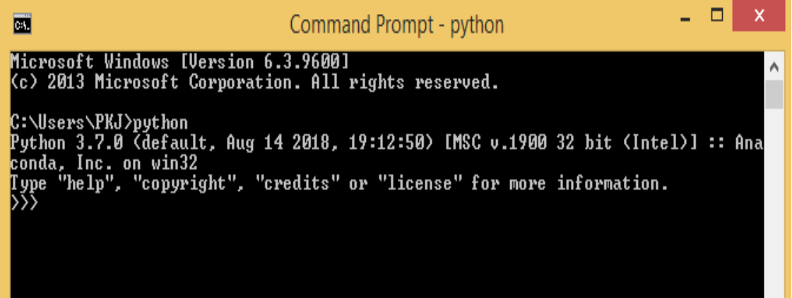
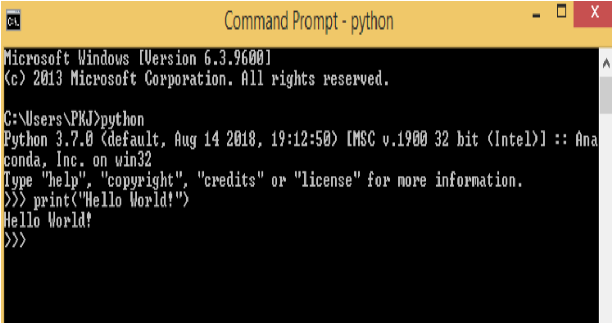
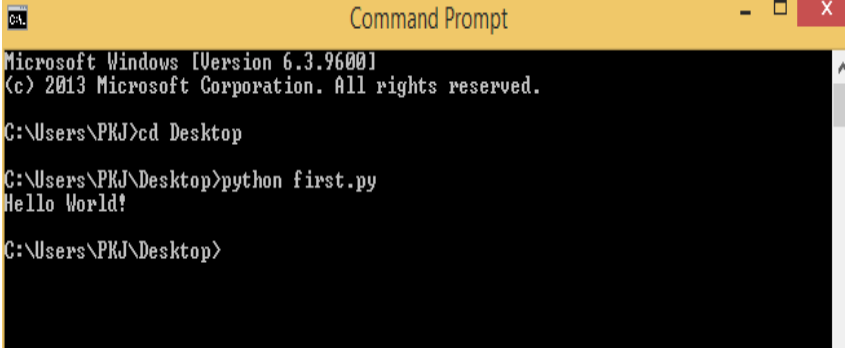

Python provides Interactive Shell to execute code immediately and produce output instantly. To get into this shell, write python in the command prompt and start working with Python.
Press Enter key and the Command Prompt will appear like,
Now we can execute our Python commands.
Here is the First program which displays Hello World!
Alternatively, programmers can store Python script source code in a file with the .py extension, and use the interpreter to execute the contents of the file. To execute the script by the interpreter, you have to tell the interpreter the name of the file.
Open text editor and Write following code in it and save it as a first.py.
print(“Hello World!”)Now open Command prompt and execute it by
python first.pyPath in the command prompt should be location of saved file. where you have saved your file. In the above case file should be saved at desktop.
